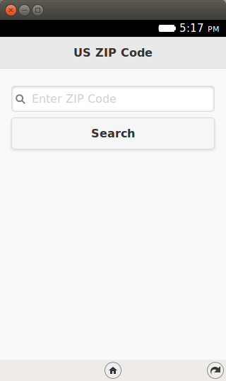
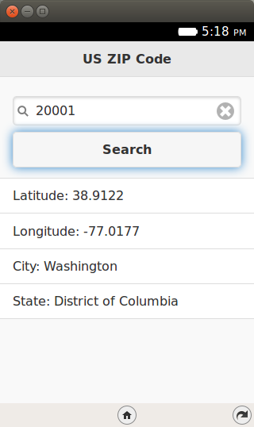
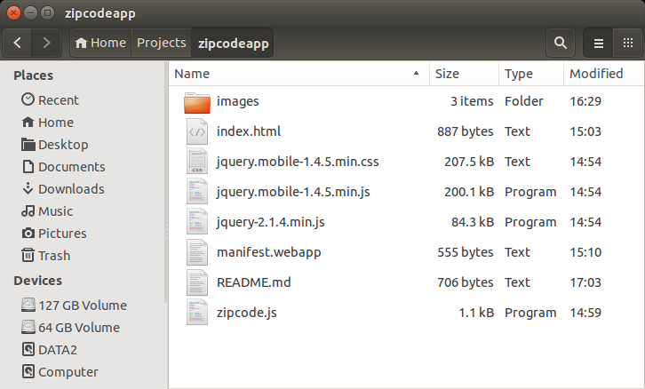

Welcome to Episode 2 of the Firefox OS App Development Tutorial. This series will take you through the steps to write Firefox OS Apps. This episode is about writing our first Hello World program for Firefox OS.
You have setup your machine with the Firefox OS Simulator. If not, you can go back to Overview and Development Setup to do this.
Firefox OS supports 2 kinds of applications: Hosted Apps and Packaged Apps.
Hosted Apps are those that are hosted at a web URL. All the files that compose the app, like HTML, JS, CSS, images, are all present at the hosted URL itself. No file is present on the device and the device will need to be connected to the internet to use it. There are mechanisms now in HTML5 like AppCache that allow you to cache assets of the file locally though for most purposes, we will assume that hosted apps are completely present online.
The advantage of hosted apps is that you can update them easily and all your users will get the latest version immediately on next access. The flip side is that they have to be connected.
Packaged Apps take the opposite approach. All the files that compose your web app, like HTML, JS, CSS, images, are packaged into a ZIP file. The ZIP file is downloaded on your device and the app is installed locally. Applications that are deployed in this fashion can function without the device being connected to the Internet. However, if your application makes use of some public API or external web service, you will need to be connected.
The Firefox Marketplace, which we shall see in a later episode, supports listing of both hosted and packaged applications.
Let us check out the application in action first. This will help you understand what we shall be achieving by the end of this blog post. While we can follow tradition and would like to say “Hello World”, it will be good to go a bit beyond that.
What we shall write is a mobile application that will give us details on the different ZIP codes in the United States. You enter a valid ZIP code in the application and it will give you the details of that ZIP code, including its state name, city name, longitude, and latitude.
The mobile application makes use of an external Web service called Zip Code Galore!. This will also help demonstrate making Ajax calls over the network from your Firefox OS Mobile. Nothing special there but by taking a little more realistic example, it will help set off things on the right note.
All right then, the first screen of the mobile app is shown below:
When we enter a valid ZIP code, like 20001, the app makes a call to the ZIP code service and retrieves/parses/displays the information as shown below:
Simple and useful? Let’s get going with the code. Note that the example screenshots are from the Firefox OS Simulator running locally.
I suggest that you begin with a full download of the project source code. Since the project depends on libraries like jQuery and jQuery Mobile, it will save you the hassle of downloading the dependent libraries.
Go ahead and download the code from: https://github.com/anicholakos/zipcodeapp
Extract all the code in some folder. For example, on my machine, the code is present in $HOME/Projects/zipcodeapp, but it could be any directory of your choice. You should see a folder structure inside of zipcodeapp, that looks like this:
You will notice that jQuery and jQueryMobile libraries are present but the key files that make up your application are index.html, zipcode.js, and the manifest.webapp files that we shall discuss next.
Since our application is a simple single screen application, all we need at this point is a single index.html file together with the zipcode.js file that contains the programming logic. The code for index.html is shown below:
1 2 3 4 5 6 7 8 9 10 11 12 13 14 15 16 17 18 19 20 21 22 23 24 25 26 27 28 29 30 31 32 | <!DOCTYPE html>
<html>
<head>
<meta charset="utf-8">
<meta name="viewport" content="width=device-width, initial-scale=1">
<title>US ZIP Code</title>
<link rel="stylesheet" href="jquery.mobile-1.4.5.min.css">
<script src="jquery-2.1.4.min.js"></script>
<script src="jquery.mobile-1.4.5.min.js"></script>
<script src="zipcode.js"></script>
</head>
<body>
<div data-role="page" id="home">
<div data-role="header" data-position="fixed">
<h3>US ZIP Code</h3>
</div><!-- /header -->
<div data-role="content">
<input type="search" id="searchCriteria" value=""
placeholder="Enter ZIP Code" autofocus>
<a href="#" id="btnSearch" data-role="button">Search</a>
<div id="linebreak"> </div>
<ul data-role="listview" id="searchResults">
</ul>
</div><!-- /content -->
</div><!-- /page home -->
</body>
</html>
|
The UI is based on jQuery Mobile, which is a responsive web UI framework. I strongly suggest to use UI frameworks that are responsive in nature, as in they adapt to different screen sizes and resolutions. Increasingly the web is being accessed by people with different screen sizes and resolutions and it is imperative that your web UI adjust itself gracefully for optimum web display. You can also choose to go for frameworks like Bootstrap or even Firefox OS Building Blocks, but I leave that choice to you.
One point to note here: One may argue about why a simple application like this needs heavy frameworks like jQuery and jQuery Mobile. Can’t we just get going with our plain simple HTML coded by hand? Yes, you can. My intention here is not to demonstrate optimum coding techniques but to show you that you can use your existing frameworks while coding Firefox OS apps. The idea is to indicate to the reader that all the tools/frameworks that he/she is used to should be used as needed.
So, moving on to the UI part, focus on lines 14-30 for the user interface.
Let us dicuss functionality now. Since programming logic for Firefox OS apps is written in JavaScript, we’ll put our code in the following zipcode.js file:
1 2 3 4 5 6 7 8 9 10 11 12 13 14 15 16 17 18 19 20 21 22 23 | $(document).ready(function() {
//Invoke ZIP Code Search API
$("#btnSearch").click(function() {
zipcode = $("#searchCriteria").val();
var xhr = new XMLHttpRequest({mozSystem: true});
xhr.open("GET", "http://api.zippopotam.us/us/" + zipcode, true);
xhr.onreadystatechange = function() {
if (xhr.readyState == 4) {
var result = "";
var resp = JSON.parse(xhr.response);
var location_obj = resp.places[0];
result += "<li>Latitude: " + location_obj['latitude'] + "</li>";
result += "<li>Longitude: " + location_obj['longitude'] + "</li>";
result += "<li>City: " + location_obj['place name'] + "</li>";
result += "<li>State: " + location_obj['state'] + "</li>";
console.log(result);
$("#searchResults").html(result);
$('#searchResults').listview('refresh');
}
}
xhr.send();
});
});
|
We are using the standard jQuery .ready() callback to do our wiring once the page is loaded.
The only functionality that we need is a click handler for the btnSearch button. The code is a straightforward Ajax call to the web service hosted at http://api.zippopotam.us/us/<YourZIPCode>. This service returns us a JSON formatted string for the ZIP code that we enter. For example, if you make the following request http://api.zippopotam.us/us/90210, it will return you the details for the ZIP code 90210. A sample JSON response is shown below:
{"post code": "90210", "country": "United States",
"country abbreviation": "US", "places": [{"place name": "Beverly Hills",
"longitude": "-118.4065", "state": "California",
"state abbreviation": "CA", "latitude": "34.0901"}]}
A key thing to note over here. You could utilize the jQuery Ajax methods but I have intentionally shown you the raw XMLHTTPRequest object over here, so that you are aware of what is going on at the ground level. However, pay attention to line 5. The XMLHttpRequest object is instantiated in the normal way but with an additional setting of mozSystem:true as shown below. This is required for the Firefox OS browser. I could not get it to work without that.
var xhr = new XMLHttpRequest({mozSystem: true});
The next few lines make the standard Ajax call to the service and when the response is ready, it parses out the information, creates individual li elements for the result data and populates the searchResults with the response.
That is all we have in the code.
Now that the code is ready, we need to specify an additional file known as manifest.webapp. This file is needed to provide various meta data about your application. If you are coming from an Android world, think of this file as the android-manifest.xml file that you write.
We shall go into the details on manifest in a later episode but for now, it is sufficient to know that this file will provide information like:
Take a look at the manifest.webapp file shown below:
1 2 3 4 5 6 7 8 9 10 11 12 13 14 15 16 17 18 19 20 21 | {
"version":"1.0",
"name": "Zipcodes",
"description": "This app gives you information on zipcodes of the US!",
"launch_path": "/index.html",
"icons": {
"128": "/images/zipcode_128.png",
"512": "/images/zipcode_512.png"
},
"developer": {
"name": "Romin Irani",
"url": "http://www.rominirani.com"
},
"default_locale": "en",
"type": "privileged",
"permissions": {
"systemXHR": {
"description": "Required to make Ajax Calls over the Network"
}
}
}
|
Let us discuss the entries:
The version, name and description should be straightforward to understand. A good practice is to choose them carefully so that they reflect accurately what your application does. Choose a versioning scheme that reflects your internal schemes and/or development/build processes.
The launch_path specifies what file is to be invoked when your app is launched. This is ideally the first page that you would like to show when the user launches your app. The value should be a relative path in your application directory. In our case, the file we want to launch on application start is index.html and since the manifest.webapp file is in the same folder as the index.html, we simply specify the value as /index.html. But make it a relative path in case the first page is nested inside some other directory than where the manifest.webapp is present.
When your mobile application is installed on the Firefox OS Device, the OS will select the icon to be shown on the device, which when tapped will launch your application. To submit an app to the marketplace, it is required to have two sizes of icons: 128 pixel and 512 pixel (see https://developer.mozilla.org/en-US/Apps/Build/Manifest).
The next values developer, url, and name specify details on who created the application. Be consistent with these values and do specify a URL that actually exists.
The default_locale is English (en) for now.
The next 2 values are critical to the functioning of this application. This is because our application needs to invoke some special APIs i.e. in our case it is the Ajax call that is made to the external web service. Hence we have to specify one property name type and its value is set to privileged. Only privileged apps have access to special Web APIs for example, some of the device APIs, which we shall be seeing later. It is good to have this setup now itself. And since we have mentioned that our application type is privileged, we have to also mention which permissions you need. And that is specified by the permissions parameter. Currently since we need just the XMLHttpRequest to be made, we specify this as follows:
"permissions": {
"systemXHR": {
"description": "Required to make Ajax Calls over the Network"
}
}
There is a full list of permissions for your reference. For a discussion on different types of Firefox Apps, check this developer note.
This completes our discussion of writing our first Firefox OS App. Now comes the part of seeing it actually work. All we need to test out this application is:
Steps to install the application in your Firefox OS Simulator are given below:
Launch your Firefox Browser. Next, launch the WebIDE by pressing Shift+F8, and end up where we were at the end of Overview and Development Setup:
Since we have written a packaged app, we need to specify the directory where our manifest.webapp file is. That will be sufficient for the WebIDE to pick up the rest of the details including the launch URL and so on. Click on Open App -> Open Packaged App... as shown below:
The WebIDE will then read the manifest, validate it.
Clicking the triangle icon deploys the app to the simulator. The first time it runs you will be asked for permission to share your location.
After clicking Share you can use the app.
The app is now installed on the simulator for use later.
In case you want to make changes to your application, all you need to do is modify the index.html, zipcode.js, manifest.webapp or additional files in your application. You do this in a normal way on your machine.
Once the changes are ready, you can simply click on the refresh icon – which replaced the triangle you used to deploy the app the first time. This will load the latest version of the application and relaunch it for you in the simulator. Nice, isn’t it?
I encourage you to enhance the current application by providing error checks, validation, etc. If you want, you could possibly try out writing your own app. If you are looking for other public web APIs to call, take a look at ProgrammableWeb, they list thousands of APIs. Maybe you could write a weather or currency app... the world is yours.
The next episode will go into a little more detail for the Firefox OS Simulator, some issues that you may see when you write incorrect manifest.webapp and how to use the Dev Tools within Firefox to understand issues, logs, etc.
Once we cover that, we shall get going with publishing the application to the Marketplace in later episode.
{kind=link}
{kind=link}
{kind=link}
{kind=link}
{kind=link}
{kind=link}
{kind=link}
{kind=link}
{kind=link}